Práctica 3.3: Despliegue de una aplicación Flask (Python)
Prerrequisitos
Servidor Debian con los siguientes paquetes instalados:
- Nginx
- Gunicorn
- Pipenv
Introducción
¿Qué es un framework?
Actualmente, en el desarrollo moderno de aplicaciones web se utilizan distintos Frameworks que son herramientas que nos dan un esquema de trabajo y una serie de utilidades y funciones que nos facilita y nos abstrae de la construcción de páginas web dinámicas.
En general los Frameworks están asociados a lenguajes de programación (Ruby on Rails (Ruby), Symphony (PHP)), en el mundo de Python el más conocido es Django, pero Flask es una opción que quizás no tenga una curva de aprendizaje tan elevada, pero nos posibilita la creación de aplicaciones web igual de complejas de las que se pueden crear en Django.
Flask
En la actualidad existen muchas opciones para crear páginas web y muchos lenguajes (PHP, JAVA), y en este caso Flask nos permite crear de una manera muy sencilla aplicaciones web con Python.
Flask es un “micro” Framework escrito en Python y concebido para facilitar el desarrollo de Aplicaciones Web bajo el patrón MVC.
La palabra “micro” no designa a que sea un proyecto pequeño o que nos permita hacer páginas web pequeñas, sino que al instalar Flask tenemos las herramientas necesarias para crear una aplicación web funcional, pero si se necesita en algún momento una nueva funcionalidad hay un conjunto muy grande extensiones (plugins) que se pueden instalar con Flask que le van dotando de funcionalidad.

Gunicorn
Cuando se implementa una aplicación web basada en Python, normalmente se tienen estas tres piezas:
- Servidor web (Nginx, Apache)
- Servidor de aplicaciones WSGI (Gunicorn, uWSGI, mod_wsgi, Waitress)
- Aplicación web (Django, Flask, Pyramid, FastAPI)
Los servidores web procesan y distribuyen las solicitudes de los navegadores y otros clientes y envían respuestas a los mismos.
WSGI (Web Server Gateway Interface) proporciona un conjunto de reglas para estandarizar el comportamiento y la comunicación entre servidores web y aplicaciones web. Mediante el uso de servidores y aplicaciones web compatibles con WSGI, los desarrolladores pueden concentrar su tiempo y energía en el desarrollo de aplicaciones web en lugar de administrar la comunicación entre la aplicación y el servidor web.
Gestor de Paquetes PIP
pip es el comando para instalar paquetes de Python integrados en las fuentes desde la versión 3.4.
Este comando automatiza la conexión al sitio https://pypi.org/, la descarga, la instalación e incluso la compilación del módulo solicitado.
Además, se ocupa de las dependencias de cada paquete.
Entornos virtuales en Python
Un entorno virtual es una forma de tener múltiples instancias paralelas del intérprete de Python, cada una con diferentes conjuntos de paquetes y diferentes configuraciones. Cada entorno virtual contiene una copia independiente del intérprete de Python, incluyendo copias de sus utilidades de soporte.
Pipenv
Pipenv es una herramienta que apunta a traer todo lo mejor del mundo de empaquetado (bundler, composer, npm, cargo, yarn, etc.) al mundo de Python.
Automáticamente, crea y maneja un entorno virtual para tus proyectos, también permite agregar/eliminar paquetes desde tu Pipfile así como instalar/desinstalar paquetes. También genera lo más importante, el archivo Pipfile.lock, que es usado para producir determinado build.
Despliegue
-
Instalamos el gestor de paquetes de Python Pip:
-
Instalamos el paquete pipenv para gestionar entornos virtuales:
-
Comprobamos que está instalado correctamente mostrando su versión:
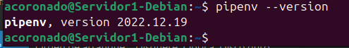
-
Creamos el directorio en el que almacenaremos nuestro proyecto:
-
Al crearlo con SUDO, los permisos pertenecen a root:
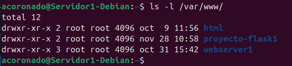
-
Hay que cambiarlo para que el dueño sea nuestro usuario y pertenezca al grupo www-data, el usuario usado por defecto por el servidor web:
-
Establecemos los permisos adecuados al directorio, para que pueda ser leído por todo el mundo::
-
Dentro del directorio de nuestra aplicación, creamos un archivo oculto .env que contendrá las variables de entorno necesarias:
-
Editamos el archivo y añadimos las variables, indicando cuál es el archivo .py de la aplicación y el entorno, que en nuestro caso será producción:
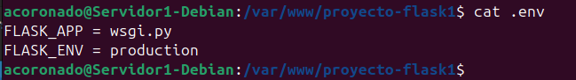
-
Iniciamos ahora nuestro entorno virtual.
Pipenvcargará las variables de entorno desde el fichero .env de forma automática: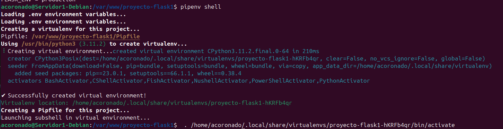
-
Usamos pipenv para instalar las dependencias necesarias para nuestro proyecto:
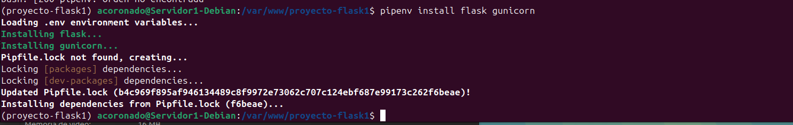
-
Vamos ahora a crear la aplicación Flask más simple posible, a modo de prueba. El archivo que contendrá la aplicación propiamente dicha será
application.pyywsgi.pyse encargará únicamente de iniciarla y dejarla corriendo:Y tras crear los archivos, los editamos para dejarlos así:
-
Corramos ahora nuestra aplicación a modo de comprobación con el servidor web integrado de Flask. Si especificamos la dirección 0.0.0.0 lo que le estamos diciendo es que escuche en todas sus interfaces, si las tuviera:

-
Ahora podemos acceder a la aplicación desde nuestro, ordenador, introduciendo en un navegador web:
http://ip-maq-virtual:5000: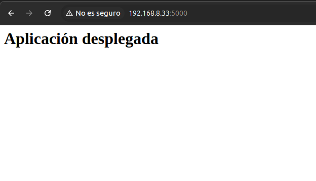
Ahora comprobaremos que unicorn trabaja bien. Usaremos el siguiente comando:
Donde:
-
workers N establece el número de hilos que queremos utilizar, como ocurría con Node Express.
-
bind 0.0.0.0:5000 hace que el servidor escuche peticiones por todas las interfaces de red y en el puerto 5000
-
wsgi:app es el nombre del archivo con extensión .py y app es la instancia de la aplicación Flask dentro del archivo.
Y debería mostrarnos esto:
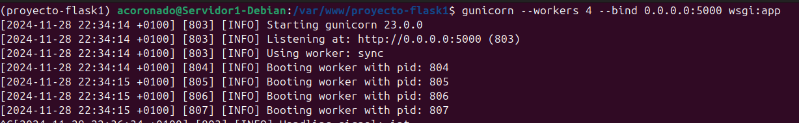
-
Dentro del entorno virtual, debemos tomar nota de cuál es el path desde la que se ejecuta gunicorn para poder configurar más adelante un servicio del sistema. Podemos averiguarlo así:
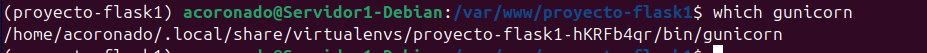
-
Ya fuera de nuestro entorno virtual, crearemos un archivo para que systemd corra Gunicorn como un servicio del sistema más:
[UNIT] Description = flask_app.service After=network.target [Service] User=acoronado Group=www-data Enviroment="/home/acoronado/.local/share/virtualenvs/proyecto-flask1-hKRFb4qr/bin/" WorkingDirectory=/var/www/proyecto-flask1 ExecStart= /home/acoronado/.local/share/virtualenvs/proyecto-flask1-hKRFb4qr/bin/gunicorn --workers 3 --bind unix /var/www/proyecto-flask1/proyecto-flask1.sock wsgi:app [Install] WantedBy=multi-user.target
-
Ahora, como cada vez que se crea un servicio nuevo de systemd, se habilita y se inicia
Y si todo ha ido bien al ejecutar
systemctl status nombre_serviciodebería de salirnos como activo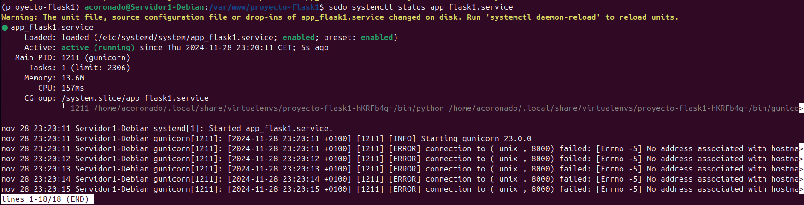
-
A continuación creamos un archivo con el nombre de nuestra aplicación y debe estar en
/etc/nginx/sites-available/nombre_aplicacion. -
Recordemos que ahora debemos crear un link simbólico del archivo de sitios webs disponibles al de sitios web activos:
-
Para finalizar reiniciaremos el servicio de nginx
-
Ya no podremos acceder por IP a nuestra aplicación, ya que ahora está siendo servida por Gunicorn y Nginx, necesitamos acceder por su server_name. esto lo haremos modificando el archivo /etc/hosts
-
El último paso es comprobar que todo el despliegue se ha realizado de forma correcta y está funcionando, para ello accedemos desde nuestra máquina anfitriona a:

Ejercicio 1
Ejercicio
Repite todo el proceso con la aplicación del siguiente repositorio: https://github.com/raul-profesor/Practica-3.5
Recuerda que deberás clonar el repositorio en tu directorio /var/www:
git clone https://github.com/raul-profesor/Practica-3.5
Y, tras activar el entorno virtual dentro del directorio del repositorio clonado, para instalar las dependencias del proyecto de la aplicación deberás hacer:
pipenv install -r requirements.txt
Y un último detalle, si miráis el código del proyecto, que es muy sencillo, veréis que Gunicorn debe iniciarse ahora así:
Y el resto sería proceder tal y como hemos hecho en esta práctica.
-
El primer paso que haremos será clonar el repositorio
https://github.com/raul-profesor/Practica-3.5en la ruta/var/wwwcon el siguiente comando:
-
Tras haber clonado el repositorio cambiaremos los permisos y grupos de estas carpetas para poder hacer modificaciones en las mismas.
Y como podemos ver, los cambios se han aplicado correctamente
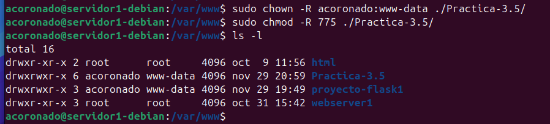
-
Lo siguiente que deberemos hacer será crear el archivo .env para poder ejecutar el entorno virtual de Python en el cual escribiremos lo siguiente:
Y ahora ejecutaremos el entorno virtual con
pipenv shell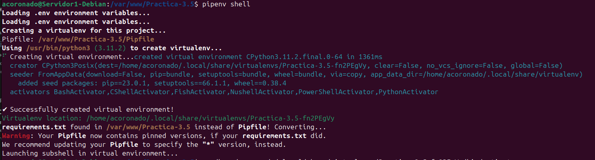
-
A continuación entraremos en él con
cd Practica-3.5y ejecutamos el siguiente comandoWarning
Esto instalará todos los paquetes que la aplicación python necesita para funcionar
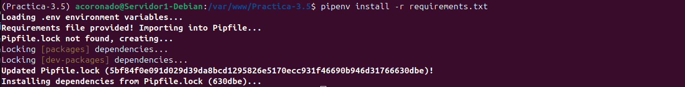
-
Tras que la instalación de dependencias del proyecto se descargue e instale correctamente deberemos proceder con la instalación de gunicorn.
-
Antes de comenzar con la configuración de gunicorn vamos a comprobar que la página web funciona para eso ejecutaremos el comando.
Y como podemos ver, la página web se muestra correctamente
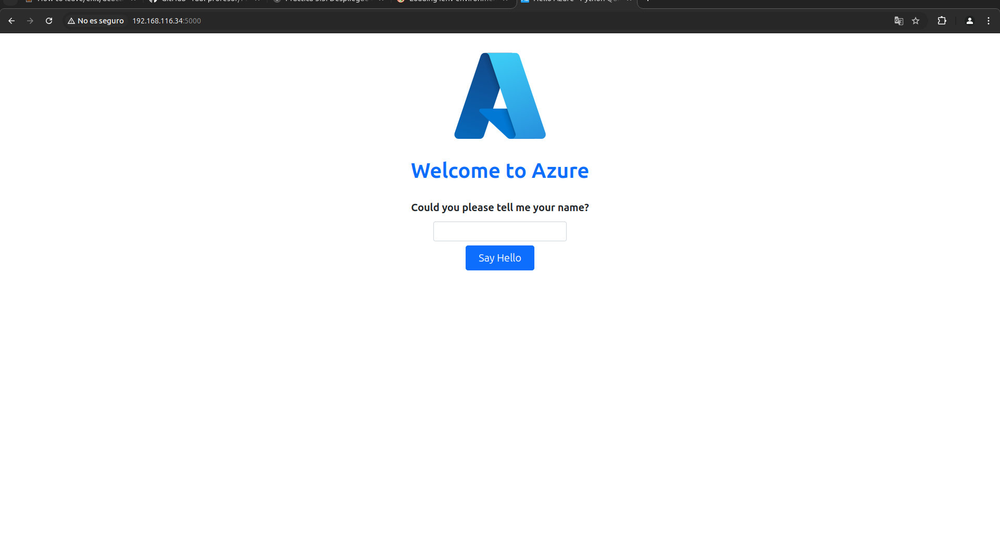
Una vez que sabemos que la página web se muestra correctamente probaremos con gunicorn para ver si también trabaja correctamente
Y nos saldría algo muy parecido a esto
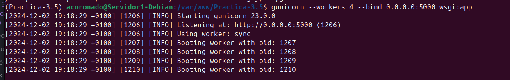
Tras esto deberemos averiguar y tomar nota de cuál es el path desde el cual se ejecuta gunicorn para configurar en unos pasos más adelante un servicio del sistema. Ejecutaremos el siguiente comando:
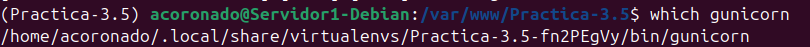
/home/acoronado/.local/share/virtualenvs/Practica-3.5-fn2PEgVy/bin/gunicorn
-
Lo siguiente que haremos será crear el archivo de configuración del servicio para que gunicorn se pueda ejecutar como servicio en el sistema.
[Unit] Description = practica-3.5.service After=network.target [Service] User=acoronado Group=www-data Enviorment="/home/acoronado/.local/share/virtualenvs/Practica-3.5-fn2PEgVy/bin/" WorkingDirectory=/var/www/Practica-3.5 ExecStart= /home/acoronado/.local/share/virtualenvs/Practica-3.5-fn2PEgVy/bin/gunicorn --workers 4 --bind unix:/var/www/Practica-3.5/Practica-3.5.sock w> [Install] WantedBy=multi-user.targetY para que este archivo se pueda ejecutar introduciremos los siguientes comandos en la consola
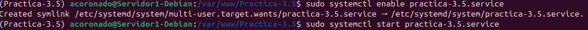
Como se puede ver, el servicio está activo y corriendo
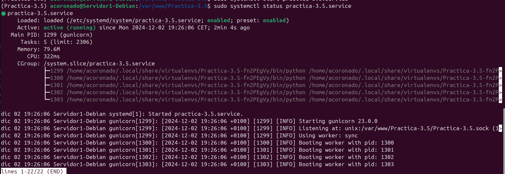
-
Tras esto crearemos un archivo de configuración de nginx con el nombre de nuestra aplicación el cual estará ubicado en
/etc/nginx/sites-availabe/nombre -
Ahora deberemos crear un link simbólico del archivo de sitios webs disponibles al de sitios web activos:
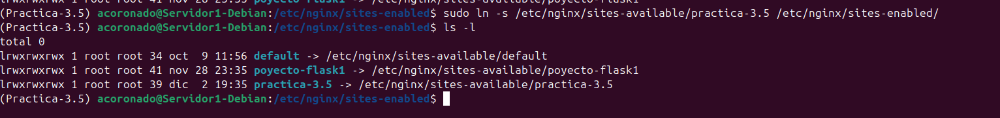
-
Por último reiniciaremos el servicio de nignx
-
Ya lo último que quedaría sería añadir el servidor a nuestra lista de hosts conocidos en nuestra máquina anfitriona para poder visitar la web